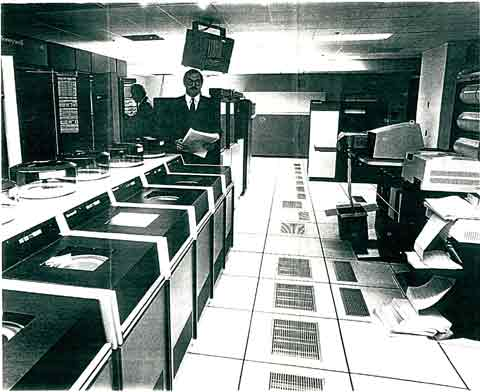

| Honeywell | the communicator |
St. John's University (SJU) of New York purchased $2.2-million system to satisfy academic/administrative requirements of 18,000 students, capping 18-month campaign by Senior Marketing Rep Al Maggio. SJU one of nation's largest Catholic universities.
System's functionality, ease of use overcame competition from IBM, CDC, DEC, UNIV AC, Burroughs, service bureaus. FE to assist transition from outside time-sharing to in-house processing. System engineering contract valued at $200,000.
Total team effort highlighted by visit of DPO VP Dick Meise at final proposal presentation. Regional Marketing Director Ron Levy, Manager of Financial Marketing Harry Spence, BM Sal Canariato, Counsel John Kaminsky handled important business details. Heavy involvement by Multics Program Office's Nate Adelman, BMMS Larry Wagner, Senior Technical Advisor Carmen Puma. Technical expertise by Craig Senft, Ed Brunelle, Vinnie Cascini on conversion analysis. Customer visits coordinated by Ed Coor. Guest Services in Phoenix showed impressive LISD product, customer support.
Hardware to be installed in two phases, completion by 1983. First phase: Level 68/DPS M central processor with 4MB of memory, CSU6601 console with large-screen monitor, DATANET 6661 with 96 communications lines, eight MSU0451 disk drives, three MTU0500 tape drives, PRU1200 line printer. Second phase: additional CPU, SCU, 4MB of memory.

St. John's computer room, Albert Maggio in center
Information from Albert Maggio
Last modified: 07/20/00